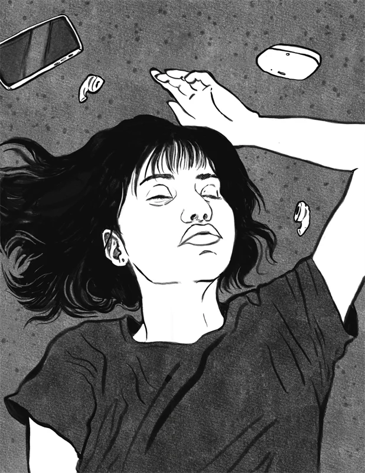

I make visual narratives for editorial, commercial, and spatial environments.
Ana Ben is a Mexican illustrator and comic artist. Her work fuses the personal with the fantastic through traditional and digital techniques. She has illustrated for publishers such as Penguin Random House and Uroboros, and in 2025 she was selected for two consecutive terms for the Graphic Novel Residency at the Casa del Autor in Zapopan. Her career includes international recognition, such as first place at the Łódź Comics Festival in Poland, alongside collaborations in film projects, collective exhibitions, and commemorative posters.
Ana Ben es ilustradora y artista de cómics mexicana. Su obra fusiona lo personal con lo fantástico a través de técnicas tradicionales y digitales. Ha ilustrado para editoriales como Penguin Random House y Uroboros, y en 2025 fue seleccionada en dos periodos consecutivos para la Residencia de Novela Gráfica en la Casa del Autor de Zapopan. Su trayectoria incluye reconocimientos internacionales, como el primer lugar en el Festival de Cómics de Łódź, Polonia, y colaboraciones en proyectos de cine, exposiciones colectivas y carteles conmemorativos.